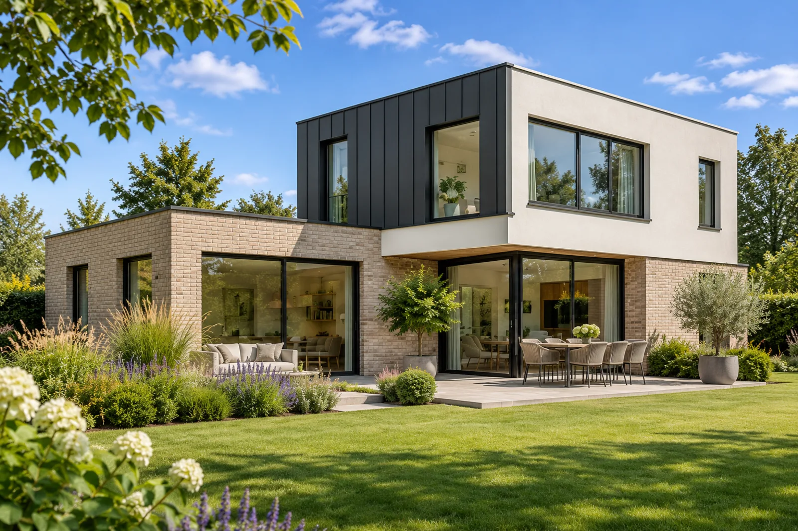

Construction.
Partir de vous. Bâtir pour demain.
Une maison, un lieu de travail, un bâtiment à imaginer. Nous vous accompagnons pour transformer vos besoins en un projet de construction qui vous ressemble.
Parlons de votre projetDécouvrir l’accompagnement
Un lieu conçu autour de ses usages.
Faire construire permet de penser le bâtiment à partir de vos besoins. Organisation des espaces, implantation, lumière, matériaux et équipements composent ensemble votre futur lieu de vie ou de travail.
De la recherche du terrain à la conception des plans, au chiffrage et au suivi du chantier, D-SIGN vous accompagne selon la mission définie ensemble. Les choix techniques et les enjeux de confort se discutent à chaque étape.
Votre façon d’habiter ou de travailler
Les usages de votre famille ou de votre activité guident les premières décisions.
Un projet dans son environnement
Terrain, implantation, lumière et contraintes du site se travaillent ensemble.
De l’idée au suivi du chantier
Les plans, le chiffrage et la coordination s’enchaînent selon la mission confiée.
Ce qui vous donne
envie d’avancer.
Vos usages et vos priorités dessinent le projet. Voici quelques sujets à aborder ensemble.
- Dessiner un lieu à votre mesure
- Partir d’un bâtiment neuf
- Étudier les techniques constructives
- Préparer la durabilité du bâtiment
- Personnaliser les volumes et les finitions
- Intégrer les enjeux énergétiques
- Anticiper les règles de sécurité
- Choisir les matériaux du projet
- Prévoir l’évolution de vos besoins
- Relier le projet à son environnement
Un projet qui se prépare
avec vous.
Notre méthode en détail- Définir
Comprendre le lieu, vos besoins et les possibilités du projet.
- Concevoir et chiffrer
Préparer les plans, les propositions et les éléments du budget.
- Coordonner et suivre
Organiser les travaux prévus selon la mission confiée.

Parlons
concrètement.
Faut-il déjà avoir trouvé un terrain ?
La recherche du terrain fait partie de l’accompagnement annoncé par D-SIGN. Nous pouvons donc échanger sur votre projet en amont et définir la mission adaptée à votre situation.
Construisez-vous aussi pour les professionnels ?
D-SIGN accompagne les projets de particuliers et de professionnels. Les besoins de votre activité, de vos équipes et des utilisateurs du bâtiment font partie du cadrage.
Quand les plans et le chiffrage sont-ils préparés ?
Après la définition des besoins et du contexte, les plans sont élaborés avec vous. Ils servent de base au chiffrage et à la consultation avant validation des propositions et lancement des travaux prévus.
Votre projet de construction commence ici.
Le lieu, vos idées, vos priorités.
Parlons de ce que vous souhaitez créer.